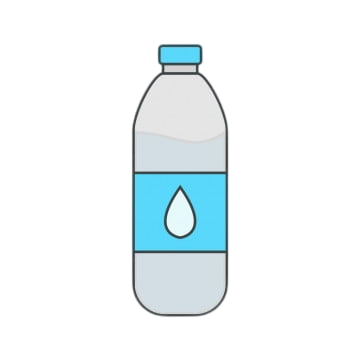
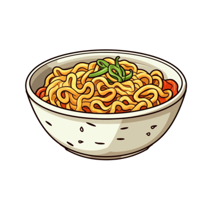

<ion-content [fullscreen]="true" color="pink2">


  <ion-button shape="round" size="large" style="margin-left: 100px; margin-top: 10px;" color="cream">
    ประเภทสินค้า
  </ion-button>


<div class="button-container">
  <ion-button color="cream" (click)="goToSinka()" class="custom-button">
    
    <br>
    <ion-label>
      เครื่องดื่ม
    </ion-label>
  </ion-button>

  <ion-button color="cream"  (click)="goToSink2()" class="custom-button">

    
    <br>
    <ion-label>
      ขนม
    </ion-label>
  </ion-button>

  <ion-button color="cream"  (click)="goToSink3()" class="custom-button">
    
    <br>
    <ion-label>
      อาหารสำเร็จรูป    </ion-label>
  </ion-button>

</div>


<ion-fab slot="fixed" vertical="bottom" horizontal="end">
  <ion-fab-button [routerLink]="['/bossmap']">
    <ion-icon name="person-circle-outline"></ion-icon>
  </ion-fab-button>
  <ion-fab-list side="top">
  </ion-fab-list>
</ion-fab>

<ion-fab vertical="bottom" horizontal="start" slot="fixed">
  <ion-fab-button color="success" (click)="goBack()">
    <ion-icon name="arrow-back-outline"></ion-icon>
  </ion-fab-button>
</ion-fab>

</ion-content>


  
